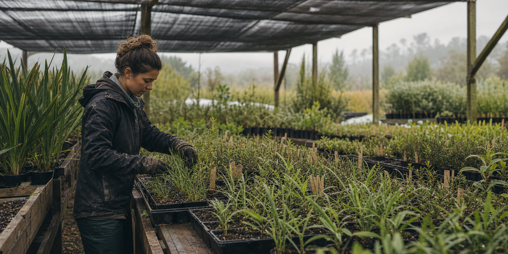
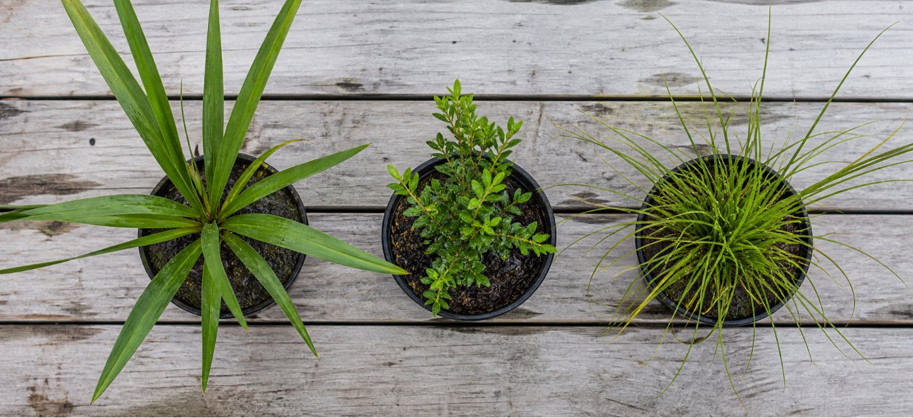

Tell us where you are planting.
Bring photos and tell us about the soil, sun, wind and what you want the planting to do.
Plan a nursery visit
Native plants for home gardens, farms, waterways and restoration projects, grown with their future site in mind.
Open the field list ↘
Bring photos and tell us about the soil, sun, wind and what you want the planting to do.
Plan a nursery visitPhormium tenax
Leptospermum scoparium
Carex secta
For larger jobs, the species, quantities and timing need to work together. We help landowners, schools and community groups decide what to plant, how many they need and when to collect it.
Open Thursday to Saturday
9:00am to 3:00pm
Waikato pick-up
Project delivery by arrangement